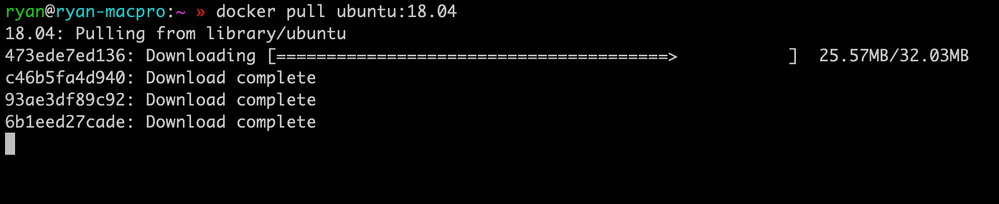

Getting Started with Docker
First Steps
1) Make an account on the website https://hub.docker.com
Make the username something sensible as we’ll have to use it soon!
1) If you haven’t already, try “docker run ubuntu:18.04”. This downloads an image containing Ubuntu 18.04. If it it is the first time you have done this, you should see some output:

What is happening here? Have a look here. Docker Hub is a centralised repository for storing container images, and many are provided for you as a basis for creating your own. So here, we’re downloading the Ubuntu 18.04 container image as the starting point for our software.
2) So, now we want to create our own Docker image and install some software into it. How do we do so?
- Create a directory by doing:
mkdir docker-tutorial- Change directory into the folder:
cd docker-tutorial- Start tracking the files in the folder with
bash git init
Create a file called Dockerfile in this directory, and put as the first line:
from ubuntu:18.044) Now, we can start installing things inside the image. We do this by adding subsequent lines to the Dockerfile; a command to run a particular application is prefaced by “RUN”. If you’re not familiar with Linux, and are primarily a Windows or Mac user, it may seem a little odd to install programmes using typed out commands, but it can be very powerful. For Ubuntu, there are basically two commands you need to know.
First, we’ll need to get an up to date the list of Ubuntu packages which can be installed; note that this is almost always necessary. To do this, add:
The Ubuntu command for doing so is:
apt-get updateHowever, it is not a good idea to add this as an isolated command in Dockerfiles. We’ll come to why later.
To install programmes in Ubuntu, you run the command:
apt-get install NameOfApplication
To see what applications are available on Ubuntu 18.04, you can have a look https://packages.ubuntu.com/bionic/
Ubuntu sees a release once every 6 months. However, it’s not a good idea to upgrade that frequently. Most scientists using Ubuntu pick a Long Term Stable (LTS) release which is updated about every two years. With a LTS release, software you install through package repositories sees security updates, but not feature updates, and these are provided for three years after release. This means that you can rely on software built in that ecosystem continuing to work.
If you need updated versions of packages, you can still do so by either installing it manually, or using Personal Package Archives (PPAs) which are often provided by software authors.
First of all, we’re just going to install Python 3. The package name for this is just ‘python3’
To do this, add the following line to your Dockerfile
RUN apt-get update && apt-get install -y python3
Breaking this down, we’ve just put the two commands together - the ‘&&’ just runs the two commands as a single command, in order. Note that we’ve here added a flag - ‘-y’ to the install. This just means ‘yes’ - if we try to install without this flag, the programme apt-get would expect us to confirm that we want to install the software, but the build of the image would fail because we’re not in an interactive terminal during the container build process.
Now, you have a script which tells Docker to build a container which: * Is based on Ubuntu 18.04. You could change this to another Linux distribution if you wanted, such as CentOS. * Contains Python 3.
This is the general principle of containers - you build them up in steps until they have everything you need to run real applications.
Now, we can tell Docker to run a default command when the container is launched. We do this using a slightly different syntax - instead of using RUN, we set a programme using the ‘CMD’ command.
CMD /bin/bash
This just tells Docker to launch the Bash shell. From this, we can launch all of the programmes installed into the container. Alternatively, we could just as easily write:
CMD /usr/local/python3
If you specify multiple commands in a Dockerfile with CMD, then all but the last are ignored!
Use the ‘/bin/bash’ line in your Dockerfile.
7) Now let’s actually build the container image from the script file. We do this using the following command - replace “YOURUSERNAME” with your username for the account we created with Dockerhub earlier.
docker build . -t myimageBreaking this command down:
Docker is the application.
We’re running Docker’s ‘build’ command
”.” refers to the file location - it’s saying “build the Dockerfile in this folder”
-t myimage - if you’re not familiar with Linux, adding a dash is a common way of signalling how to pass information to a command. Here, “-t” just means build the image with the tag myimage
If you ever need help about a particular command, you can add the ‘–help’ flag which gives you a bit more information. For example, if we wanted to see what all of the Docker ‘build’ options were, we can run:
docker build --help
and you get a long list of flags and what they mean.
More concepts
Every time you add another command to the script, you create a new layer. A layer is the essentially just a list of differences between the previous command and the present one. Your container image is built up of multiple layers. If you want to add a new command, you don’t have to rebuild completely from scratch - Docker is clever enough to start from the last common layer. These layers do take up storage space, however.
That means though, if you change the programmes installed with apt-get on the second line of the script, all subsequent steps must be repeated, because Docker can’t work out if subsequent steps are independent or not of each other.
Earlier we had to specify apt-get update and apt-get install on a single line in our Dockerfile. This is due to the layers; if you try to modify a Dockerfile a few hours or days after creating it, some software may fail to install because Ubuntu sees frequent updates, and the apt package caches stored in the Dockerfile would be out of date. By always prefacing apt-get install with apt-get update we avoid having to worry about this.
7) Let’s launch a container, and try and run some software.
We can do this in two ways - similar but quite different.
1) Start a container from the image interactively, and launch the programme:
To run interactively, we must add the “-i -t” flag. If we don’t do this, the programme will launch, but will freeze!
docker run -i -t myimage bashThen, just run
python3
to launch the Python interpreter.
2) To create a container from the image, and give it the name ‘mytest’
docker create --name mytest YOURUSERNAME/myimage- Then, start the container:
docker start --name mytest- Then run a command in that container:
Often, we want to install programmes in the container in order to manage dependencies, but we need to have them act on files stored on the host computer itself. This can easily be achieved by mounting folders into the container, so that they are visible inside it. The syntax for this is:
docker run -it -v FOLDER_ON_HOST:FOLDER_IN_CONTAINER myimage
A really common use case is to mount the current directory inside the container. Normally we make the directory inside the container the default working directory for that container. You can do this by adding the following line to your Dockerfile:
WORKDIR /app
If you’re using Linux, we can then mount the current directory on the host system to this folder with:
docker run -it -v $(pwd):/app
On Windows this is slightly different:
docker run -it -v %cd%:/app
Another common use case is to open make a port from the container visible on the host system.
Ports are used to pass messages from one application to another. They are denoted by numbers, and there are two types:
- Transmission Control Protocol (TCP) - Messages sent from one application to another in order. If they arrive in the wrong order they are unjumbled by the reciever and if some are missing because of network issues, the receiver lets the sender know and they are resent. Think of it a bit like having a conversation.
- UDP - Messages sent from one application to another but no acknowledgemnt from the reciever. Think of it a bit like one application shouting at another.
Ports can be forwarded - think of this like rerouting your post from one address to another.
To open a TCP port when running a container you can do it via the command:
docker run -it -p 4000:8000 myimage
Here, 4000 is the port on the host machine, and 8000 is the port inside the container which is being forwarded.
Just to prove this working, create a new file called ‘index.html’ in your folder with the following contents:
<html>
<head>
Testing out Port Forwarding with Docker
</head>
<body>
Here is some text in a web page.
</body>
</html>Launch the docker container with the following:
# Linux and Mac
docker run -it -p 4000:8000 -v $(pwd):/app myimage python3 -m http.server
# Windows
docker run -it -p 4000:8000 -v %cd%:/app myimage python3 -m http.serverNow, go to the URL localhost:4000 and you should see the webpage!
It’s not likely you’ll have to use UDP ports very much, but for completeness, the syntax you would use to forward a UDP port is: docker run -it -p 4000:8000/udp